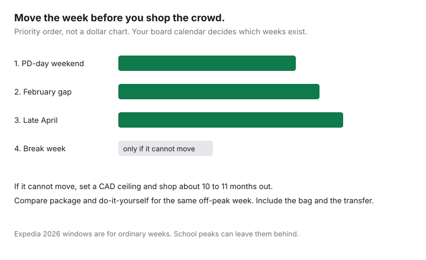

Travel · Canada
Skip Peak March Break Prices: Canadian Family Alternatives That Still Feel Like a Trip
The quote arrives in January and the March break week is roughly the price of two ordinary weeks, or it feels that way at the kitchen table. Families then either pay it or cancel the idea of going anywhere. The week is expensive because Canadian school calendars dump a large share of family demand onto a few departure days from the same gateways. The way through is a different week, a different shape of trip, or an early ceiling if you truly cannot move.
This is a Canadian school-calendar method. It is not a US spring-break party guide. Dollar gaps below are a worksheet you fill with live quotes. Expedia’s February 2026 Canada report is the backdrop for ordinary weeks, and it says fixed peaks such as March break can sell out of sane prices before those averages apply. Nothing here is a live fare.
Disclosure: Sun-package and hotel booking sites are an offer type. Saving Optimizer may earn a commission if we later add partner links. We do not claim an airline, resort, or booking-site partnership. Compare the checkout total in Canadian dollars. Education only.
Key takeaways
- The spike is crowded demand from Canadian gateways, not a law that March is always the dearest month on earth. Your board’s week may not be the next province’s week.
- First lever: a PD day, a February week, or late April, where the school calendar actually allows it. Do not skip class to manufacture a fare.
- Second lever: a city, a park, or a staycation with one paid activity, priced against the resort quote. Youth 17 and under are free at Parks Canada; camping is not.
- Third lever: a sun week one week off the peak, package and do-it-yourself, same dates, total CAD.
- If someone can work from the rental for two weekdays, price those days against unpaid leave. If the break week is mandatory, shop it when schedules open, about 10–11 months out, with a written ceiling.
Why March break fares and resorts spike from Canadian gateways
Airlines and tour operators can see a school calendar as clearly as a parent can. When a large board, or a cluster of boards, sets the same week off, seats from Toronto, Montreal, Vancouver, Calgary, and the other family gateways are bid on by households who cannot move the dates. Resorts in Mexico and the Caribbean staff and price that week for the same reason. The captive buyer is the product. A household that shops only that week is negotiating inside the crowd.
There is no single Canadian March break. Ontario boards often cluster in a mid-March week, and they do not all match. Quebec’s relâche scolaire is set by school service centres and is often earlier. British Columbia and Alberta districts publish their own dates, sometimes a two-week window, sometimes a week that bumps into April. A fare article that says “fly the week before March break” is useless until you write down the week your children are actually off. Open the board calendar for the year you will travel, and write the Monday and the Friday.
Ordinary booking averages do not rescue that week. In Expedia’s February 2026 Canada data, domestic economy was cheapest 31–45 days out and international economy was cheapest 15–30 days out, versus booking 180 or more days ahead. The same report, and our booking-window guide, flags Christmas and March break as weeks that can leave those averages behind. Waiting until five weeks out for a break-week sun package is how the “everything is gone except the expensive room” quote appears.
Shift to PD days, February, or late April where schools allow
Move the trip before you hunt a cheaper flight on the same dates. Three shifts cover most boards.
- A PD day, a pedagogical day, or another non-instructional day, plus the weekend. In Ontario those days are often called PD days. In Quebec, pedagogical days. Elsewhere the label changes. A Friday off plus Saturday and Sunday is a three-day city or a provincial-park night. A Monday off makes four. It will not feel like a seven-day resort. It will feel like a trip if you leave town. Confirm the day on the board calendar. A day that is off for teachers and in session for students is not a travel day.
- February. For boards whose break is in March, February is still school, except for family day or a relâche that already fell. Use February when a parent’s leave, a custody schedule, or a PD day creates a gap, or when the trip is two adults. Family Day long weekends are their own small peak. Price the weekend after, not only the Monday.
- Late April. Many boards are still in class, exams have not fully started, and the sun week is off the March crowd. Easter moves. If the April week you want is the Easter long weekend, you have found a different peak. Check the board before you call it shoulder season.
Where the school does not allow the absence, stop. An unpaid day for a parent is a household choice. An unexcused absence for a child is not a savings tactic. If both adults can take leave only during the published break, skip to the last section and shop that week early. The shoulder-season guide is the month picker once the school constraint is honest.

Domestic ski-to-city swaps and staycations with activity passes
A break-week ski package and a February city week are different products. Compare them as trips, not as airfare. The ski week buys snow, a resort village, and a lift ticket that is often the largest line after lodging. The city week buys transit, one museum or one game, and a kitchen. Households that want “to have gone somewhere” often need the second product and have been quoted the first.
Domestic swaps that still feel like travel, without a resort minimum:
- A city with a day pass. Montreal, Quebec City, Ottawa, Toronto, Halifax, Winnipeg, and Vancouver can fill three or four days on foot plus transit if the teens or children have one planned outing. Price the day pass the week you go. Do not carry a blog’s fare in your head.
- A park week in a shoulder, not in a sold-out village. Parks Canada admission for youth 17 and under is free, a rule in place since 1 January 2018 and still on the 2026 fee pages. Banff’s regular daily admission from 8 September 2026 is $12.25 for an adult, $10.75 for a senior, and $24.50 for a family or group in one vehicle. Camping, hot springs, and Lake Louise parking are extra. The Canada Strong Pass free-admission window ended 7 September 2026. Use the Discovery Pass guide and the Banff and Jasper guide before you assume the gate is the whole cost. Provincial parks do not inherit the federal youth waiver.
- A staycation with a pass you will use. A city museum membership, a regional rail day, or two nights in a town an hour away can be the trip if you leave the house and stop working. Price it on one sheet against the resort quote, including meals you will not cook. If the staycation is “we stayed home and ordered in,” it is not a substitute. It is a cancelled trip.
Sleeping is the line that ruins the city swap. Two hotel rooms can cost more than the flights you avoided. Run that number through the family lodging guide and, if the children are older, the teen trip guide.
Sun packages one week off-peak—compare total CAD
If the household wants sun, move the week before you change the island. Take the break week and the week immediately before it, and the week immediately after it. For each week, build two columns in Canadian dollars: a package (flight, transfer, room, and the taxes the checkout shows) and a do-it-yourself total (flight, bag, transfer, room, resort fee, breakfasts that are not included, and tips). The Mexico worksheet and the Caribbean worksheet are the line items. A resort credit is eligible spend, not a discount equal to its face value.
| Line, in CAD | Break week | One week earlier or later |
|---|---|---|
| Package checkout, including transfer | Quote A | Quote B |
| DIY flight plus bags plus room plus resort fee | Quote C | Quote D |
| Tips, airport rides at home, and one excursion | Same method both weeks | Same method both weeks |
| Travel medical, priced for the ages on the trip | See the Insurance guides | See the Insurance guides |
| Winner | The lower all-in column you can actually take off work and school | |
Travel medical is not inside the package headline. Provincial plans pay little for a foreign hospital. Use why provincial plans leave a gap and price a policy for the real trip length. That decision stays on the Insurance hub.
Work-from-away and unpaid days math for dual-income households
Two incomes make the “just take the week” advice sloppy. Price the days.
Unpaid leave. Net pay for one day, after tax, times the number of unpaid days, times two adults if both are unpaid. Compare that sum with the gap between the break-week all-in quote and the shoulder-week all-in quote. If the shoulder week saves $900 and two unpaid days cost $700 of net pay, the shoulder week still wins, and you have used leave you might have wanted later. If the shoulder week saves $400 and the unpaid days cost $900, pay the break-week price or shorten the trip. Write the arithmetic. A feeling that March is “a rip-off” is not a number.
Work-from-away. If one job can be done from a kitchen for two weekdays, the trip can sit on a school-adjacent week without two sets of unpaid days. The conditions are practical: a reliable connection, a time-zone overlap, and a door that closes during calls. A resort room with two children and no desk fails the test. A city rental can pass it. Count the adult as working, not as on holiday, for those days, and do not also count the days as vacation in the family story. The other adult’s leave is the scarce item. Spend it on the days the children are actually with you.
Custody schedules and shared parenting override fare math. If the children are with you only on the published break, the alternative week does not exist. Say that out loud before anyone shops February.
Book the next March break 10–11 months out if you must travel then
When the week cannot move, shop it as a scarce product. Major airlines commonly open schedules on the order of 10 to 11 months before departure. The exact day varies by carrier and by route. Put a reminder on the calendar for 11 months before the first day of your board’s break, and another at 10 months. When the dates appear, set a fare alert and a package alert the same week. You are not trying to book 11 months out because a blog said early is always cheaper. You are trying to see the week while more than one fare bucket still exists.
Set the ceiling before you look. The ceiling is the all-in CAD number from the sheet above, including bags. Buy when a refundable or a 24-hour-reviewable fare hits the ceiling, on whatever weekday that happens. The cheap-day guide is why you do not wait for Tuesday inside a disappearing peak week. If the only seats left are above the ceiling, the trip is a shorter domestic week or a no. That is a successful plan. Paying double because the calendar reminder never got set is the failure mode.
Sources & date stamps
- Expedia.ca 2026 Air Hacks, February 2026 — domestic economy cheapest 31–45 days out, about $185 CAD versus 180+ days; international economy cheapest 15–30 days out, about $190. Fixed peaks can leave the average. Used 24 Sep 2026 via our booking-window guide, which cites the same release.
- Parks Canada admission pages and Banff fee table — youth 17 and under free since 1 January 2018; regular fees apply from 8 September 2026, including adult daily admission of $12.25 at Banff; Canada Strong Pass free admission ended 7 September 2026. Camping and some services are extra. Read 24 Sep 2026.
- School dates are board and district publications. This guide does not invent a national March break week. Confirm the year you will travel.
- Travel medical amounts are not restated here. See the Insurance guide on provincial gaps, which dates OHIP and other caps on its own page.
Frequently asked questions
Why is March break so expensive from Canada?
Boards and districts release a short holiday in the same season, so flights and sun resorts from Canadian gateways are priced for a captive week. The week is not the same in every province. Quebec’s relâche, Ontario’s break, and British Columbia or Alberta district dates often differ. Check the board calendar before you shop a national “March break fare.”
Can we travel on a PD day instead?
Often, for a short trip. A professional-activity day, a pedagogical day, or another non-instructional day plus a weekend is three or four days that are not the break week. Use it only where the school actually has the day off. Do not pull a child from class to chase a fare.
Is February or late April actually cheaper?
Those weeks are off the break peak for many boards, which is the point. They are not a guaranteed discount. Price the same trip, all-in, in Canadian dollars, for the break week and for the alternative week. Expedia’s February 2026 Canada averages are a backdrop, not a promise for a fixed school week.
What if both jobs are locked to the break week?
Then shop that week early, about 10 to 11 months out, when airlines usually publish the schedule, and set a ceiling. The ordinary booking window in Expedia’s 2026 Canada data is too late for some peak school weeks. Write the ceiling down and buy when the all-in price hits it.
Should we book a sun package or do it ourselves?
Price both for the same off-peak week, in Canadian dollars, including transfers, resort fees, tips, and travel medical. The Mexico and Caribbean guides on this site are the worksheets. A headline package price is not the trip.